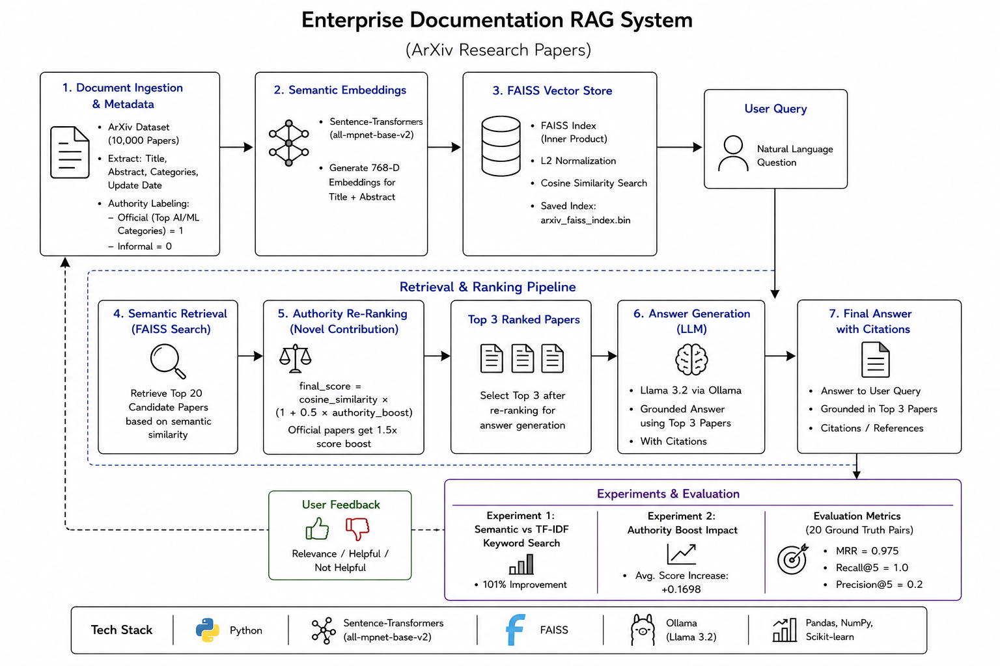

Enterprise Documentation RAG is an AI-powered semantic search and question-answering system designed to help users retrieve accurate information from large document collections. The system was built using the ArXiv dataset from Cornell University. Although the final goal is enterprise document search, the prototype uses research papers to simulate a large internal knowledge base.
The main problem this project solves is that traditional keyword search often fails when users do not use the exact same words as the document. For example, a user may ask a question using simple language, while the document may use technical wording. This system solves that issue by using semantic embeddings, which allow documents to be retrieved based on meaning rather than exact word matching.
The project also introduces an authority-based re-ranking method. This means that official or trusted documents receive a higher ranking score, helping the system return more reliable results. The final answer is generated using Llama 3.2 through Ollama and is grounded only in the retrieved documents to reduce hallucination.

The system starts with the ArXiv dataset from Cornell University. The full dataset contains around 1 million papers, but this project uses a subset of 10,000 papers for processing and testing. Each paper includes a title, abstract, category, and update date.
Each paper is loaded into the system and tagged with useful metadata. Papers from top AI and machine learning categories such as cs.AI, cs.LG, cs.CL, cs.IR, cs.NE, and stat.ML are labeled as official research papers with authority = 1. All other papers are labeled as informal papers with authority = 0.
The system uses Sentence-Transformers with the all-mpnet-base-v2 model to convert each paper’s title and abstract into a 768-dimensional vector. These vectors represent the meaning of the documents, so similar documents are placed close together in vector space even if they use different words.
All document embeddings are stored in a FAISS vector index. FAISS allows the system to search thousands of vectors very quickly using cosine similarity. The index is saved to disk as arxiv_faiss_index.bin so it does not need to be rebuilt every time.
When a user asks a question, the query is also converted into an embedding. FAISS compares the query embedding with the stored document embeddings and retrieves the top 20 most relevant candidate papers.
After semantic retrieval, the system applies an authority-based re-ranking formula:
final_score = cosine_similarity × (1 + 0.5 × authority_boost)
Official papers receive a 1.5x score multiplier. This helps trusted research papers rank higher than informal documents when their semantic relevance is similar.
The top 3 re-ranked papers are passed to Llama 3.2 running locally through Ollama. The model generates an answer using only the retrieved papers. This helps reduce hallucination because the answer is grounded in source documents.
The final output is an answer to the user’s question with citations and source attribution. This makes the system more transparent and trustworthy.
Experiment 1: Semantic Search vs Keyword Search
The system compared semantic search against TF-IDF keyword search on five queries. Semantic search achieved an average score of 0.7814 compared to 0.4389 for keyword search. This shows a 101 percent improvement.
Experiment 2: Authority Ranking Impact
The system compared retrieval with and without authority re-ranking. The authority boost improved official document scores by an average of +0.1698.
Evaluation Metrics:
This project improves traditional document search by combining semantic understanding with authority-aware ranking. Unlike keyword search, the system understands the meaning of a query. Unlike generic AI chatbots, it generates answers only from retrieved documents. This makes the system more accurate, explainable, and useful for enterprise knowledge search.